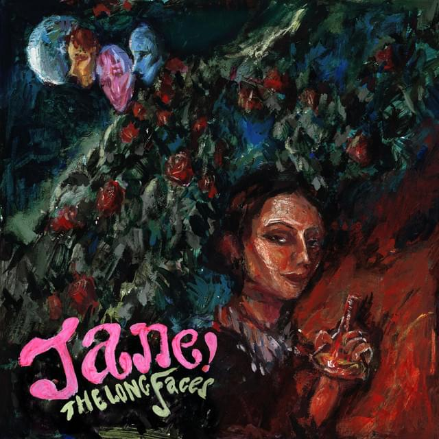
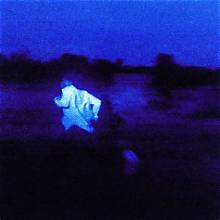
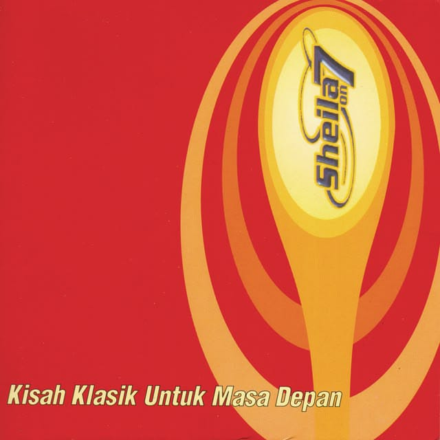
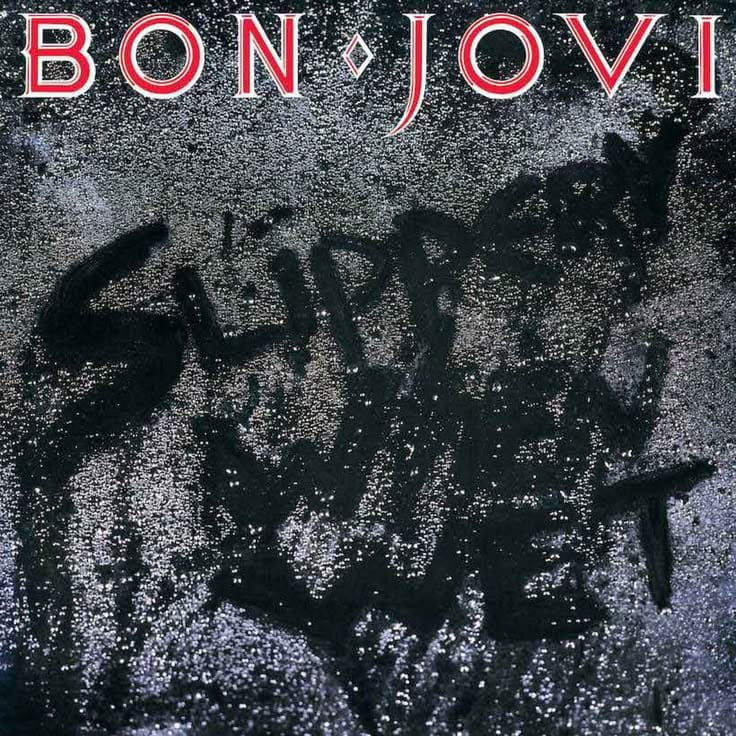

JOHN WAYNE
Cigarette After Sex
A quiet-night kind of song, made for dim lights and thoughts that are hard to explain.
BEHIND THE SONGS
Small stories behind the songs in our playlist.
JOHN WAYNE
A quiet-night kind of song, made for dim lights and thoughts that are hard to explain.

THE LONG FACES
A song for those random moments when headphones make an ordinary day feel different.

TORONTO 2014
A slower choice for moments when you just want to sit back and listen.

TUNGGU AKU DI JAKARTA
A familiar Indonesian song for moments of missing home, old friends, and Jakarta.

LIVIN' ON A PRAYER
A classic pick for when the playlist needs more energy and something easy to sing along to.
LOVE EPIPHANY
A softer indie-pop choice for the playlist, with a mood that feels easy to return to.